Native capabilities gaps and investigation guide
On this page
Status vocabulary
Native means an implementation exists in this checkout, subject to its other gates. Delegated means Spark or Iceberg Java owns the operation intentionally. Partial means only some plan shapes or feature combinations are native. Not admitted means the native planner declines the path; the overall Spark query may still work.
Source scope is Comet 184accac5 plus the explicitly recorded local residual-pushdown edits. This table is not a current-upstream feature tracker. Source references and test anchors are in the ledger.
Eligibility flow

An unsupported predicate can remain as an exact post-scan filter without rejecting the whole scan. Conversely, a feature that the reader cannot safely represent can reject the scan itself. Treat these as separate outcomes.
Read coverage
| Feature | Status | Qualification |
|---|---|---|
| Catalog and snapshot selection | Delegated | Java plans the selected state; native receives tasks |
| Time travel and branch reads | Delegated planning plus native data reading | Historical schema IDs and projection matter |
| Manifest pruning and delete association | Delegated | Java plans applicable tasks/deletes |
| Parquet data scan | Native | Iceberg ORC/Avro data files are not native here |
| v1/v2/v3 reads | Native with feature gates | v3 is not blanket coverage of new types/defaults/lineage |
| Parquet position and equality deletes | Native with gates | Struct/Variant equality keys and unresolvable keys are rejected |
| Puffin deletion vectors | Native | Blob offsets/lengths and per-data-file identity preserved |
| Schema evolution and name mapping | Native with gates | Field IDs and historical delete fields are handled |
| Arrays/maps/structs | Native reading | Not blanket nested/container predicate pushdown |
| Partition transforms/evolution | Supported through planning/task metadata | Certain transform-bearing residuals and partition value types are rejected |
| Row-group and page pruning | Native | Predicate/type/index availability controls actual pruning |
| Residual comparisons/null/IN/logical operators | Partial | Top-level/type restrictions; NOT IN remains post-scan |
| Partial residual weakening | Local uncommitted implementation | Do not present as committed HEAD support |
| DPP and AQE | Implemented with gates and shims | Unsupported subqueries/multi-index DPP rejected; Spark 3.4 AQE DPP uses fallback |
_file, _pos, _spec_id, _partition |
Native | Explicit metadata allowlist |
_deleted and row-lineage metadata projection |
Not admitted | Underlying reader lineage support is not exposed by Comet's allowlist |
| Projected initial-default values | Not admitted | Required v3 missing-column synthesis unsupported |
| Variant | Partial | Entirely unprojected roots can be tolerated; projected Variant rejected |
| Geometry/geography/unknown types | Not admitted by current type gates | No blanket v3 type support |
| Encrypted reads | Qualified support | AES-GCM 128/256-bit keys admitted; 192-bit rejected; runtime/version setup still matters |
| Local, S3/S3A, GCS, OSS reads | Qualified support | Compatible FileIO, URI and credential setup required |
| S3-compliant alias schemes | Opt-in | Do not infer support solely from URI parsing |
| Multiple S3 data/delete buckets | Not admitted | One native object-store configuration per scan |
| HDFS/Azure Iceberg locations | Not admitted by this scan scheme allowlist | Support in another Comet reader/dependency does not transfer |
| Metadata tables and catalog administration | Delegated or distinct scan paths | This native scan recognizes specific batch/staged data scan classes |
OSS read backend presence is not a claim of complete property forwarding or deployment coverage. REST catalog compatibility also does not automatically mean vended credentials are usable in Rust; the configured credential bridge and actual native access must be verified.
Write coverage
| Feature | Status | Qualification |
|---|---|---|
| Split file writer and committer | Implemented, off by default | Strategy preserves one BatchWrite and commit boundary |
| Native file production | Implemented, off by default | Requires split flag and eligible native child |
| Append and static/dynamic overwrite | Native where eligible | Publication remains Java |
| Copy-on-write DELETE/UPDATE | Native writing for covered shapes | Scan and intermediate operators have separate eligibility |
| Copy-on-write MERGE | Partial | MergeRowsExec stays JVM; native writer depends on downstream plan shape |
| Merge-on-read WriteDelta/delete-file production | Not handled by native write strategy | Read support for deletes is not write support |
| CTAS/RTAS | Native inner write paths covered | Table command/control remains Spark/Iceberg |
| Partitioned and unpartitioned writers | Native | Clustered/fanout mode and required distribution matter |
| Format v3 native writes | Not admitted | Current writer gate requires v1/v2 |
| UUID columns and encrypted writes | Not admitted | Reader and writer type/encryption support differ |
| Custom FileIO/location provider/object-storage layout | Restricted/not admitted | Default compatible layout contract required |
| Parquet writer options | Allowlisted | Enabled bloom filters, non-default page version and unvetted settings rejected |
| Local/S3/GCS writing | Qualified support | GCS additionally requires the recognized GCS FileIO route |
| OSS/HDFS/Azure writing | Not admitted by native writer | Separate write allowlist |
| Branch/WAP/commit validation | Delegated | Java SparkWrite and SnapshotProducer retain semantics |
| Data-file rewrite maintenance | Partial native acceleration | Staged scans, operators and writer each need eligibility |
Configuration anchors
spark.comet.scan.icebergNative.enabled = true
spark.comet.scan.icebergNative.dataFileConcurrencyLimit = 1
spark.comet.write.iceberg.splitOperator.enabled = false
spark.comet.iceberg.write.enabled = falseThese are defaults, not a complete launch recipe. Native library loading, global Comet execution, memory mode, shuffle-manager settings, supported Spark/Iceberg versions and the actual plan still matter. Treat native writes as experimental until validated for the intended workload.
Integration gaps worth investigating
These are source-derived opportunities, not measured bottlenecks or committed roadmap items.
| Gap | Evidence | What an implementation would need |
|---|---|---|
| Bloom-filter reads not enabled | Pinned reader exposes option; builder default is false; Comet omits it | Configuration, query correctness, selective-I/O tests and cost assessment |
| Row-lineage projection not wired | Reader has support; Comet metadata allowlist excludes fields | Task metadata propagation, schema/physical-column cases and version tests |
| Scan distribution/order metadata lost | Native scan advertises UnknownPartitioning and no ordering | Correct Spark distribution semantics and storage-partitioned-join tests |
| Narrow residual pushdown | Explicit top-level/type limits and local partial-predicate work | Boolean/null/NaN/type semantics, nested field identity and I/O assertions |
| Empty native projection reads broadly | Reader preserves counts through read-all fallback | Zero-column row-count path that also respects deletes and filters |
| Native MERGE and delta writes incomplete | JVM MergeRows and no WriteDelta strategy match | Operation-code semantics, delete production and commit parity |
| v3 writing unavailable | Explicit version gate | Defaults, lineage, types, metadata and writer protocol support |
| Storage and custom FileIO parity | Explicit scheme/provider/property gates | End-to-end credentials, multi-bucket configuration and failure tests |
Investigation workflow
Use a read-only baseline first. Record the exact physical plan, source snapshots, table schema/spec history, format version, properties, delete types and storage scheme. Change one variable at a time when testing.
Correct result -> executed native plan proof -> pruning evidence -> operator and I/O metrics -> resource profile -> repeatable comparison| Symptom | First questions | Source area |
|---|---|---|
| Native scan absent | Is Comet loaded? Which schema/FileIO/residual/version gate failed? | CometScanRule |
| Correct rows but high I/O | Did residual serialize? Are indexes present? Are bounds selective? | Scan serde and Rust reader |
| Deleted rows appear | Correct snapshot? Applicable delete list? Raw path and field IDs preserved? | DeleteFileIndex, serde, reader |
| Many tiny tasks | Split/open-cost settings? File layout? DPP results? | Iceberg task grouping |
| Driver memory pressure | Huge metadata/task pools or task binary? Planning parallelism? | Planning and plan-data distribution |
| Executor OOM | Reserved versus untracked native memory? Too many files/partitions in flight? | Memory pool, readers, shuffle writer |
| Shuffle bottleneck | Partition skew, bytes, fetch wait, codec time, spill, network? | Exchange, writer and reader |
| Writer remains JVM | Both flags? Native child? v3/properties/layout gate? | Write strategy and native serde |
| Files exist but no new snapshot | Task files are not publication; was commit attempted or uncertain? | Commit exec and SnapshotProducer |
| Slow commit | Catalog latency/conflicts/metadata work rather than file encoding? | Java commit path |
Use runtime metric names in context. Native bytes_scanned concerns actual scan I/O, including applicable delete reads; file size from a manifest is different. Shuffle write/read bytes, spill bytes and encoded/decoded row counts measure different stages. elapsed_compute is not necessarily end-to-end wall time.
Proof checklist for a public claim
- Record source versions and local changes, not just a release nickname.
- Show the actual plan and relevant fallback reasons.
- Check results against the compatible Spark path.
- For pruning, show bytes or skipped units, not just filtered output rows.
- For native writing, show writer engagement, file layout and the Java commit boundary.
- For retries, name the failed unit and distinguish task, stage and commit retry.
- For zero-copy, identify the exact boundary and any adaptation path.
- Keep issue/PR status and performance promises out of the notes unless freshly verified.